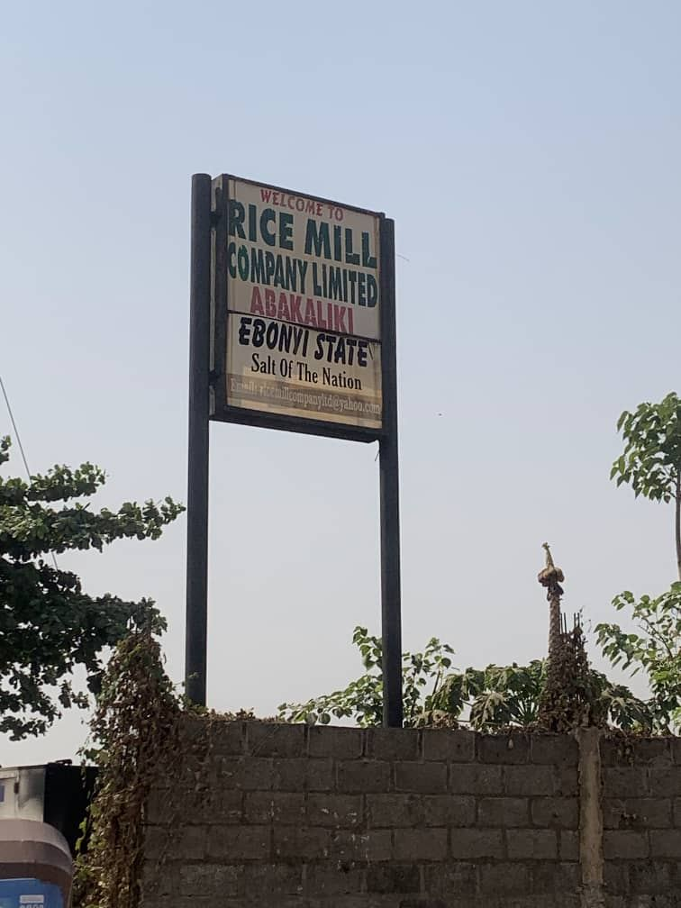

Agro-Processing Hub
We add value at every step — processing, preservation, packaging, storage, distribution and marketing of agricultural products.
Turning Harvests Into Products
Farm produce is worth more when it is processed, preserved and packaged. Our agro-processing hub converts our own and outgrowers' harvests into shelf-ready products — grains milled and cleaned, fruits juiced and dried, tomatoes processed, fish smoked and dairy chilled — all under food-safe standards.
By processing locally, we cut post-harvest losses, stabilise prices for farmers and put branded Nigerian products on shelves.
- Modern milling, drying and packaging lines
- Cold storage and refrigeration for perishables
- Branded products for retail and export markets

Farm to Consumer in Eight Steps
What Our Hub Does
Food Processing
Milling, drying, juicing, smoking and dairy processing.
Preservation & Storage
Silos, cold rooms and warehouses cut post-harvest losses.
Packaging & Branding
Retail-ready packs under the Jodozo Farms brand.
Have Produce to Process?
Farmers and aggregators can book our lines — or partner as outgrowers.